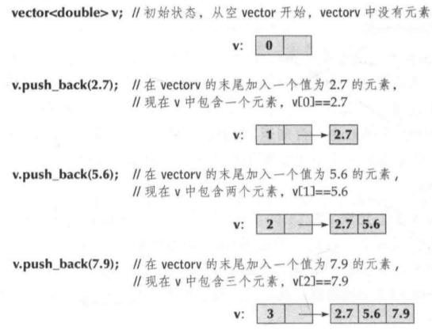

使用 vector 的时候，一般是从一个空 vector 开始，根据需要逐步填充数据。
这里的关键惭怍是 push_back()，它将一个新元素添加到 vector 中，该元素成为 vector 的最后一个元素。例如：

注意 push_back() 的调用方法，这是一个成员函数调用。
push_back()是 vector 的一个成员函数，因此它的调用必须采用符号“.”：
对象名.成员函数名(参数表)
vector 的大小可以通过调用成员函数size()来获得。初始时 v.size() 的值是 0，三次调用push_back()之后，v.size()的值变为 3。